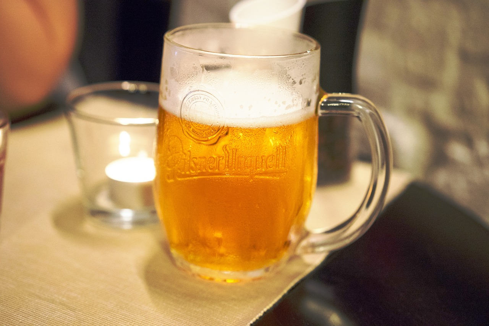
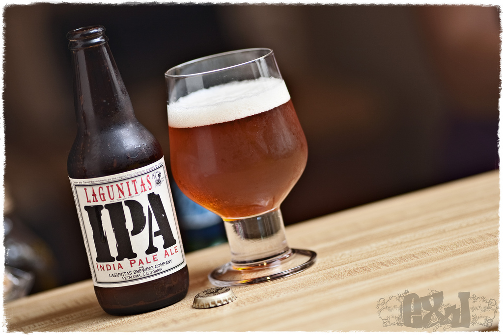
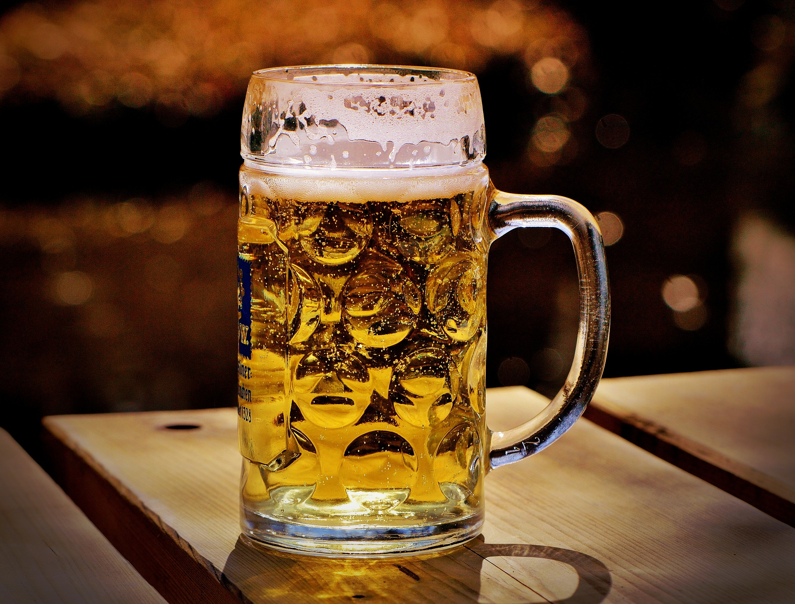
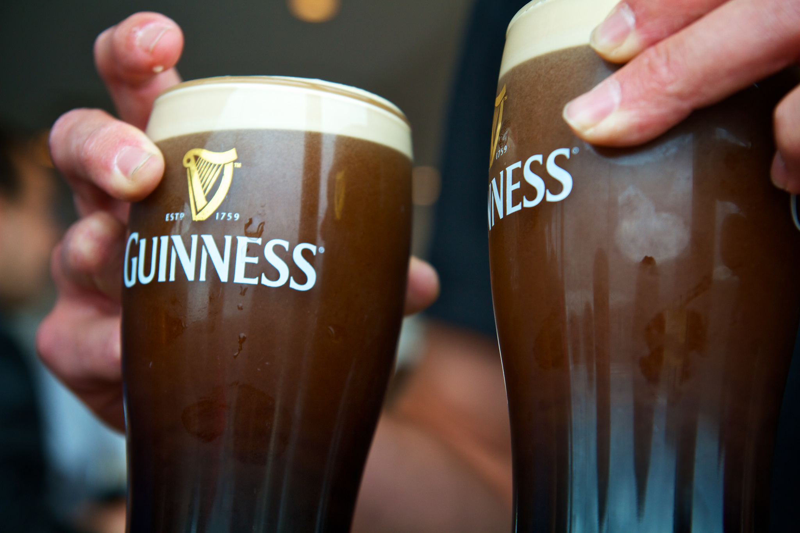
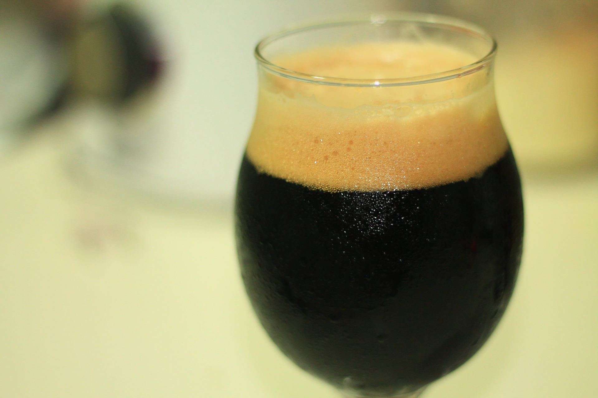

Looking for the perfect brew to go with your meal? We got you covered.

Creative Commons, Pixabay

Creative Commons, Flickr

Creative Commons, Alexa S. Fotos

Creative Commons, Zach Pischner, Flickr

Creative Commons, Pixabay
You want a nice, chilled lager
Lagers originated in 19th century Bohemia and modern variations include pilsner, helles and bock, often brewed in Germany or the Czech Republic. Lagers are made with a bottom fermenting yeast, then conditioned at a low temperature and is nearly always carbonated.
Get some ale in you!
When the British shipped ale over to India in the 19th century, it took months to arrive. To get around the mould-factor, brewers would throw in loads more hops to preserve the brew. Heavy hopping gives the beer its core flavour profile and depending on the you can pick up anything from citrus, elderflower and herbs to tropical fruits and pine needles.
Wheat beer is good for you
Wheat beers come carbonated with a dull haze, but the colour spectrum ranges from pale lemon to deep orange and darker – German ‘dunkelweizen’ is named after the ‘dark wheat’ that gives the beer its deep brown hue. The amount and variation of wheat added to the mash tun will vary by recipe; Crystal wheat gives a far clearer finish, for example. And whether it’s poured from keg or bottle, it should have a decent fluffy head.
Porter is BETTER
Romanticised as a working class brew with origins in 18th century London, porter is said to be named after the traders and labourers who enjoyed it as a cheap and nourishing beverage. Porter is often lighter in weight and has a crisper finish than stout, but still carries warm caramel and molasses notes.
Simply stout
A stout started life as the 'stoutest' strongest porter in a brewery. Shortened over the years, stouts are now in a league of their own and represented worldwide by that most famous of stouts - Guinness. Stout is known for its malty flavour, roasted scent, chocolate, coffee and creamy notes, and unique texture.
Source: BBC Good Food
The Beer Poll
Everybody has a favourite. Here's where our open poll stands. Switch betweeen preferences to see which one's are in the lead, and take our live poll at the bottom of the page to contribute to the charts.
Do you know your beer?
ABV: - %
Learn more about your go-to drink from one of the world's largets beer databases.